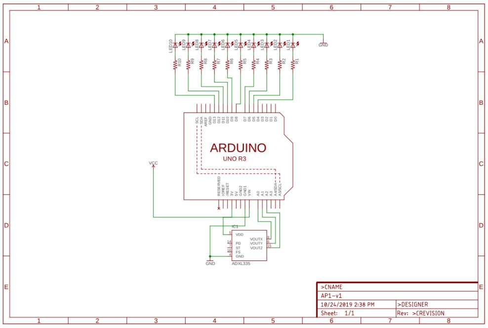
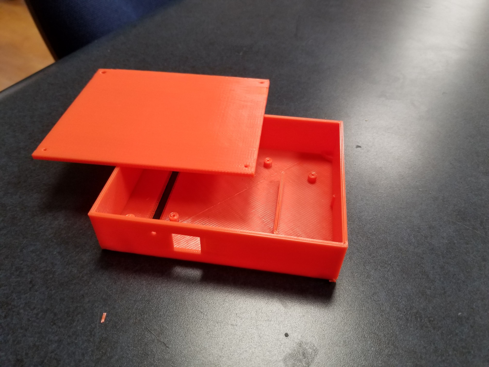
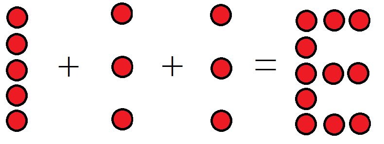
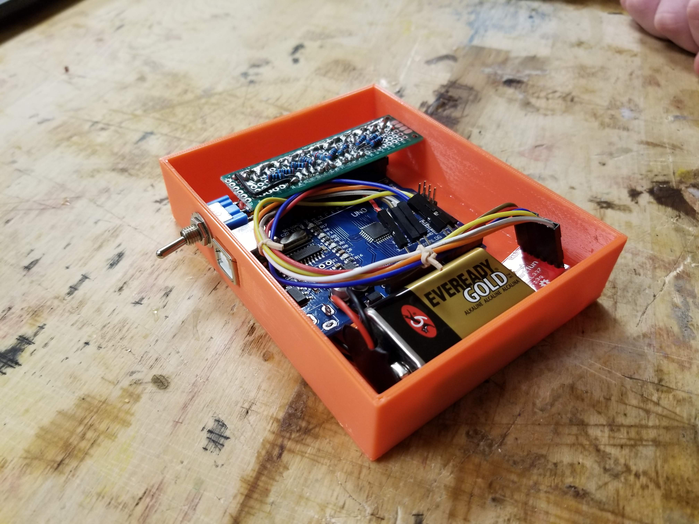
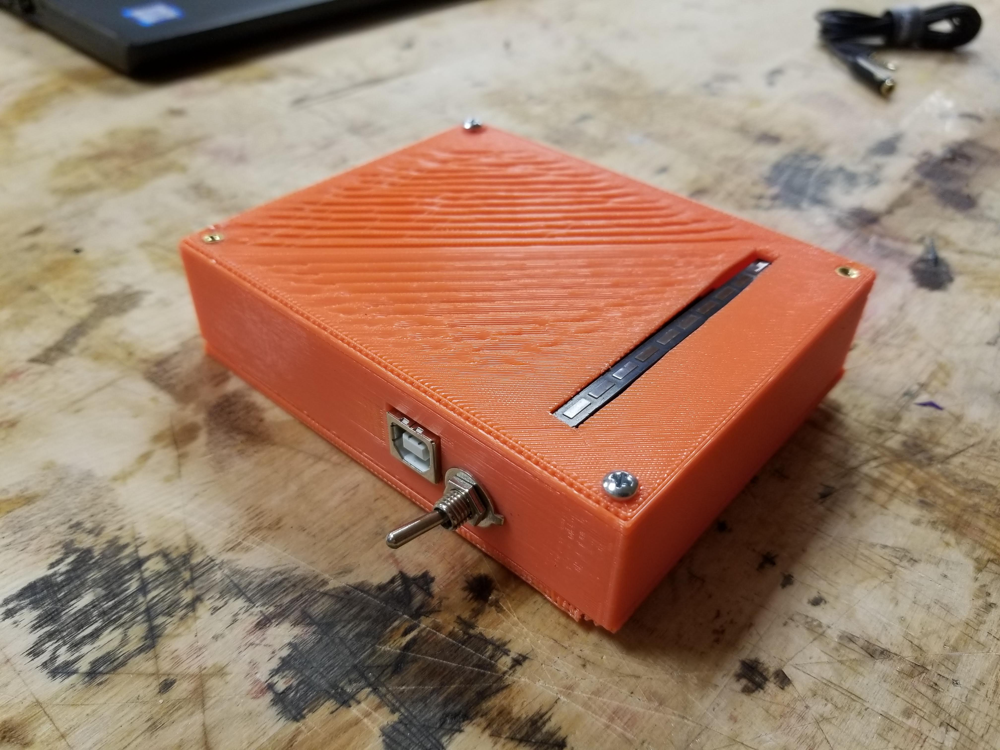

This project was made for ECE 341: Junior Design for Accelerated Project 1 at Oregon State University. It was completed in a group of three with Graham Mueller, Nicholas Lin, and myself. Each team member focused on a particular aspect of the project. The team member responsibilities went as follows: Graham Muller worked on component selection, case design and final assembly. Nicholas Lin worked on initial hardware planning, maintaining project archives, and the final video editing. I worked on writing the code and built the first prototype.

The case layout required an internal battery, the microcontroller, the LED strip with current limiting resistors, accelerometer sensor and a power switch. These all had to be wired together which necessitated extra room in the vertical axis. Each component had a small amount of buffer room added to it to deal with the imprecise 3D printing and possible component reselection as the project matures. The LED segment required offset precision as it had to be placed over a predetermined cutoff while also attaching to the arduino. The 3D files are available on Thingiverse.

Moving onto the code for the program, we'll start from the beginning and move through the important functions. You can get a good look at the full code on Github. First we have the global variables and library used in the program. The variables are split between the variables for the accelerometer calculation, variables for setting the output LEDs, the text output that will be read by the program and translated into flashes, and finally variables used for setting variable delay.
The direction is determined by reading X and Y data from the accelerometer and comparing those values to the values that were read on the previous loop. If the change in acceleration magnitude was great enough then we have detected that we’re moving. After that, using values from initial testing with the accelerometer. We determine if we are moving from left to right or moving right to left.
The translation of the character to an LED output begins with determining the character that needs to be sent to output.
This was accomplished with an if else block in the displayLetter function. The if else block continues down to all of the
possible letters that could be set.
Once the letter is determined the program then loops though the hex file that contains the character to 10 LED translation.
The program loops column by column of the letter so that it blurs together into the letter that is meant to be displayed.
The letter columns will be read in reverse if the direction is determined to be different.

The case, code, and components all came together (with some excellent wire management from Graham). The case was fastened with M3 1-1/4" machine screws on the corners and the software was uploaded to the arduino. Testing displayed that the words were readable! However, if the word is longer than seven letters, you're gonna need really long arms to get it all to display.

Below is the video presentation for the project. The video covers the finer details of the system as well as what the project members believe could have been improved on the final design.
Here's the final result below. The shape of the wand, is less of a wand, and more of a box that you wave back and fourth. It still works and the group was really pleased with the output. Thanks for reading!

Here's the Bill Of Materials for this project
| BOM Item # | Item Name | Quantity | Price/Unit | Total Cost |
|---|---|---|---|---|
| 1 | Tapered Heat-Set Inserts for Plastic | 4 | $0.54 | |
| 2 | M2 Fasteners - 5mm | 3 | $0.01 | |
| 3 | M3 Fastener - 27mm | 4 | $0.05 | |
| 4 | 9V Battery | 1 | $2.00 | |
| 5 | Arduino Uno R3 | 1 | $10.00 | |
| 6 | Toggle SPDT Switch 5A 120V | 1 | $3.00 | |
| 7 | ADXL335 Accelerometer | 1 | $7.50 | |
| 8 | 1mm x 5mm LEDs | 7 | $0.35 | |
| $27.34 |